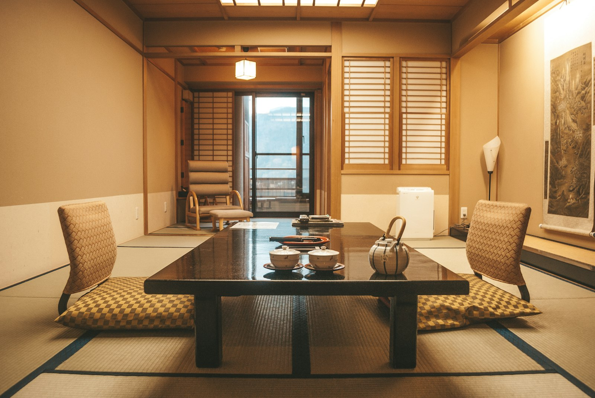
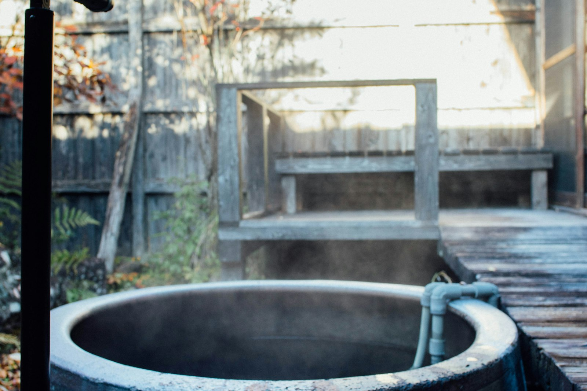
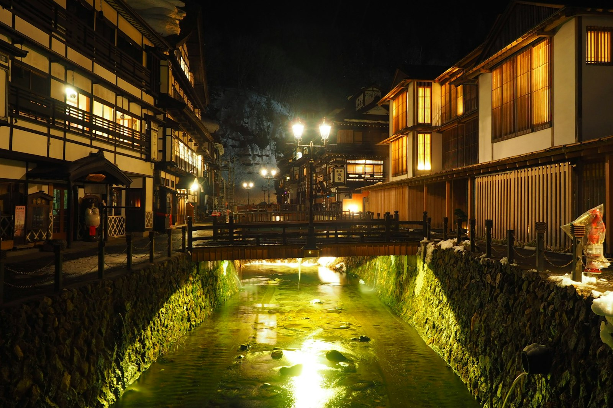

宿について

大谿川の一番上流、外湯からは少し離れた場所に、湯宿 月待はあります。部屋数は多くありません。用意されているのは豪華な設えより、「部屋にこもっていい」という許可だけです。
全室に客室露天風呂。チェックインからチェックアウトまで、極端な話、一度も外湯に行かなくても成立するようにつくられています。
全室客室露天
部屋出しの夕食
館内に時計を置かない
何もしない時間割
行き先ではなく、空白の作り方を決めておく行程です。空欄はあえてそのまま残しています。
到着日・とにかく湯に入る
15:00
チェックイン。荷物を置いたら、まず部屋の露天に湯を張る。
16:00〜19:00
とくに、なにも。湯に浸かる、うとうとする、文庫本を10ページだけ読む、また湯に戻る。
19:00
夕食は部屋出しで。器が下がるまで、次の予定は考えない。
21:00以降
浴衣のまま部屋の露天にもう一度。眠くなった時間が、寝る時間。
外湯は、2つだけ選ぶ日
午前
起きた時間が朝。目覚ましは持ってこない。朝湯にだけ浸かって、二度寝しても構わない。
昼過ぎ
浴衣に着替えて外へ。七つの外湯から、今回は2つだけ選ぶ（詳しくは次の章）。
夕方
宿に戻って部屋の露天へ。予定はここで終わり、というのを決めておく。
夜
川沿いを少しだけ散歩するか、しないか。その日の気分に任せる。
最後にもう一度、部屋の湯
朝
チェックアウトの時間から逆算して、入れるだけ部屋の露天に入る。
11:00
チェックアウト。次の予定は、駅に着いてから考える。
七つのうち、2つだけ
城崎温泉には外湯が七つありますが、今回は全制覇を目指しません。歩く距離と、湯上がりに休む時間を天秤にかけて、2つだけ選びます。
御所の湯
宮御殿を思わせる佇まいと、庭園を望む露天。外湯の中でも、腰を据えてゆっくりできる造り。
一の湯
歌舞伎の芝居小屋を模した外観が目印。湯上がりに、外の柳並木をそのまま眺められる立地。
客室露天風呂を選ぶ理由

移動しない
浴衣を着る手間はあっても、下駄で外湯まで歩く距離がない。段差の少ない一日になる。
人に会わない
脱衣所も洗い場も、待ち時間も譲り合いもない。湯の時間がまるごと自分のものになる。
待たない
混雑する時間帯を気にしなくていい。入りたい時に入り、出たい時に出る。
夜、浴衣で川沿いを少しだけ

大谿川に沿って柳が並び、外灯が水面に映ります。下駄の音だけが響く時間帯を選んで、行き先を決めずに歩く。橋を一つ渡ったら引き返す、それくらいの距離で十分です。
持っていくと、ちょうどいいもの
予定を詰めない旅なので、荷物も同じ考え方で選びます。
- 文庫本1冊（読み切らなくていい）
- 羽織るもの1枚
- 肌に合う保湿剤
- 時計は置いていく